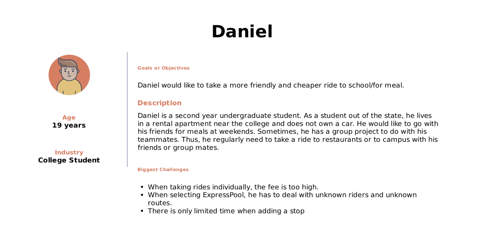
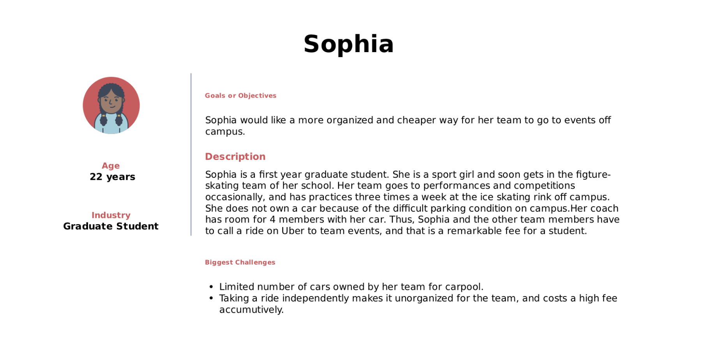
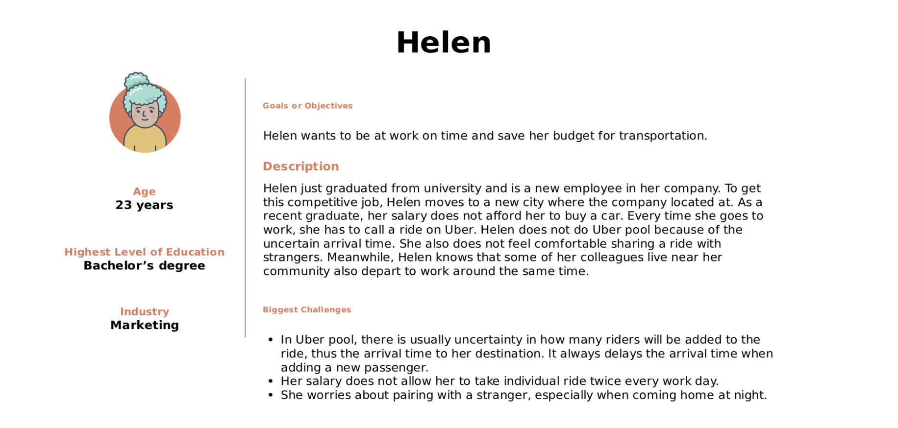
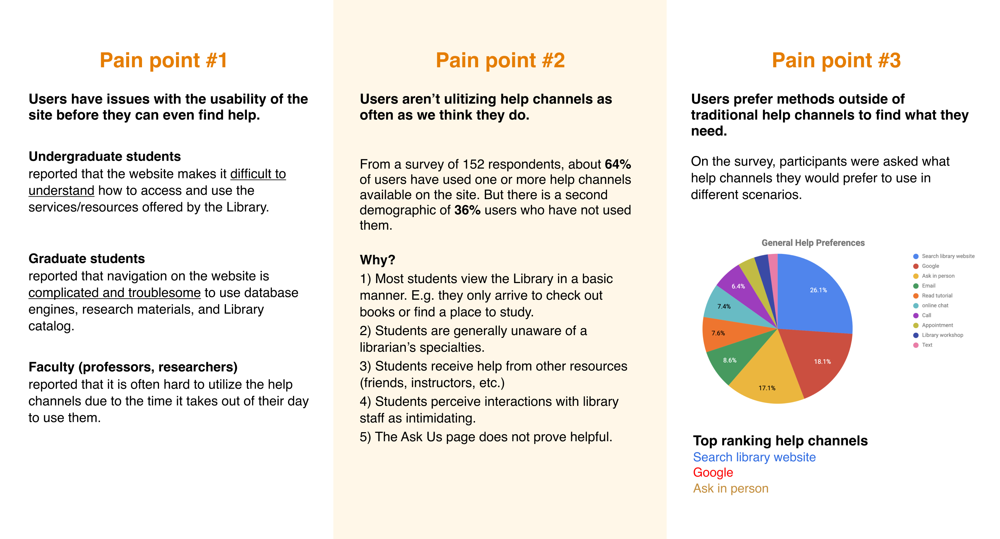

Redesigning a more personalized function for Uber
Xirui He, Weiyi Ma, Eryue Xu
Transportation Apps help build human connections by providing a convenient and affordable way for people to move and travel. Our team focuses on the interactions between riders. We want to extend a feature of Uber that helps a group of users who frequently participate in joint activities to find the right mode of transportation using Uber. Currently, Uber X allows users to choose between one or two seats and to add a stop before the destination. However, it is inconvenient if one of the two riders is at a different location and is being picked up at a different stop. The second rider is not able to track the ride details. The only way they know what the license plate is or who the driver is is to communicate with the other rider.
Students and young employees who use Uber pool want a more affordable and convenient way to commute with friends or co-workers regularly for work and group activities.
First, we conducted surveys and interviews to understand the context when users would carpool and to summarize pain points for our target users - group riders.
Based on our research, we found that young people are more likely to use Uber pool (Because older people own cars!). Thus, we focused on the 20-30 age group to create our personas. These people are mostly students or recently graduated employees. They frequently involve in school activities, sport activities or social activities.
We came up with a male college student, a female graduate student and a female employee for our persona. Their stories are based on some of our interviews and the painpoints we gathered from research.
  
Users from the interviews and survey provided insightful comments on the help channels being time-inconvenient, inefficient, slow, or unintuitive
So, our team performed an expert review to analyze the usability of the Library website and report issues to inform new design decisions.
© 2019 HE